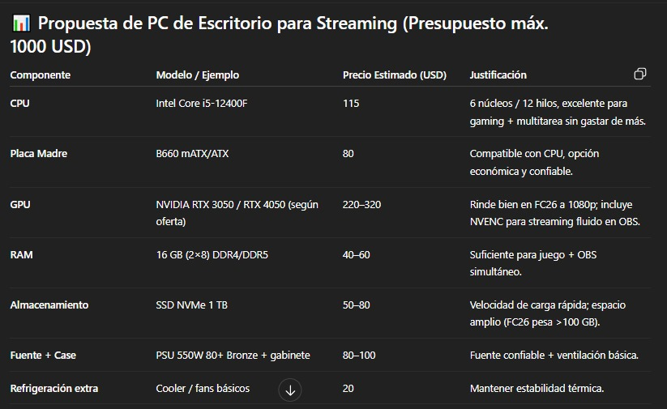
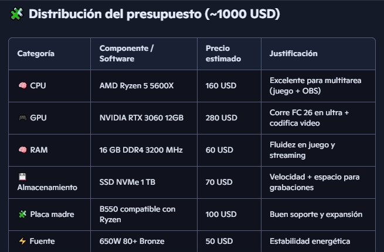

Parte de Julián
-----------------------------------------------
Para comenzar, al no tener mucha idea de componentes, le pedí ayuda a varias Inteligencias Artificiales para que me ayuden en el armado:
Según la IA ChatGPT, estos son los componentes y periféricos ideales para la PC que se busca:
Según la IA Copilot, estos son los componentes necesarios para el armado de la PC:
Toda la información obtenida a continuación es del día 22 de Septiembre:
1000 USD = 1.410.250 ARS (según https://www.exchange-rates.org/es/conversor/usd-ars/1000)
Ahora con esta información, y con los precios obtenidos de las páginas (links abajo del todo), esta fue la PC que armé:
HARDWARE:
PC Componentes:
CPU: AMD Ryzen 5 5500 = $127.889,91
GPU: VIDEO GeForce RTX 3050 8GB MSI VENTUS 2X XS OC = $399.839,87
RAM: Lexar SODIMM DDR4 16GB 3200Mhz = $68,330.00
SSD: HD SSD 1TB LEXAR NM610PRO M.2 NVME GEN3 3300MB/S 2280 = $94.749,37
Placa Madre: Asus Prime B550M-K = $129.338,78
Fuente: Sentey MBP 700W 80+ Bronze = $99,010.00
Gabinete: SENTEY H10 BLACK VIDRO LATERAL Y FRONTAL = $35.437,40
PC periféricos:
Monitor: 25" NOBLEX SM2500 VA FHD ANTIRREFLEJO 100HZ HDMI VGA +q 24 = $207.344,85
Auriculares: QBOX H039 USB JACK 3.5 Y 3 PINES GAMER CALL CENTER CELULAR H390 H110 = $11.759,89
Teclado, mouse y mousepad: COMBO TECLADO+MOUSE+MOUSEPAD AUREOX LIFELIGHT GAMING GC1000 = $34.637,75
Micrófono: TRUST MANTIS GXT232 = $41.406,08
Cámara: WEBCAM LOGITECH C920S HD PRO 960-001257 = $138.155,45
SOFTWARE:
Sistema Operativo: Windows 11 = $11.999,00
Herramientas para stream: OBS Studio + Streamlabs + NVIDIA Broadcast + Discord = Gratis
TOTAL= $1.399.898,35
JUSTIFICACIÓN de cada elemento:
Ryzen 5 5500: 6 núcleos y 12 hilos, ideal para jugar y streamear sin lags.
Excelente relación precio-rendimiento para gaming y streaming. Compatible con placas B450/B550 sin necesidad de gráficos integrados.
RTX 3050 8GB: corre FC 26 en ultra y permite streaming fluido con NVENC.
Ideal para jugar en 1080p con buena calidad gráfica. La versión MSI Ventus XS OC tiene buen sistema de refrigeración y tamaño compacto.
16GB RAM DDR4: suficiente para multitarea (juego + OBS + navegador).
Cantidad y velocidad óptima para gaming y multitarea. Compatible con Ryzen y buena marca.
SSD NVMe 1TB: carga rápida y espacio para juegos y grabaciones.
Excelente velocidad para sistema operativo y juegos. Capacidad suficiente sin necesidad de disco adicional.
ASUS B550M-K: compatible con Ryzen y PCIe 4.0, buena base para futuras mejoras.
Compatible con el Ryzen 5 5500, buena calidad de construcción y opciones de expansión. BIOS actualizable.
Fuente Sentey MBP 700W: Potencia suficiente para GPU dedicada y futuros upgrades. Marca confiable y eficiencia energética.
Gabinete Sentey H10: buena ventilación, estética gamer y espacio para todo.
Monitor Noblex 25” 100Hz: buen tamaño y fluidez visual para gaming competitivo.
Auriculares QBOX + Micrófono Trust: audio claro para streaming y comunicación y buena estética.
Teclado, mouse y mousepad: funcional y estético.
Webcam Logitech C920S: imagen nítida para transmisiones en vivo.
Windows 11: sistema moderno y compatible. Última versión con soporte para DirectStorage y mejoras en rendimiento.
OBS + Streamlabs + NVIDIA Broadcast + Discord: herramientas gratuitas y profesionales para streaming.
Links
https://ecommerce.paranahardware.com.ar
https://bluetech.com.ar/productos/windows11/
https://fullh4rd.com.ar/
COMPARACIONES de componentes que consideré al principio pero luego terminé cambiando:
CPU:
Antes, consideré el Ryzen 5 5600G (con gráficos integrados) pero terminé optando por el Ryzen 5 5500 porque el 5500 tiene mejor rendimiento en tareas multihilo y gaming con GPU dedicada, no necesitabas gráficos integrados porque ya incluías una RTX 3050, y el precio es más bajo que el 5600G, sin sacrificar potencia.
Almacenamiento:
Antes, consideré el Kingston A400 SATA, pero me terminé inclinando por el Lexar NM610 PRO 1TB NVMe debido a que es mucho más rápido (NVMe vs SATA), tiene mayor capacidad (1TB vs 480GB) y es ideal para juegos pesados, grabaciones y sistema operativo.